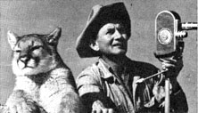

Michael Rubalcava: Amateur Ecologist
Michaiel Rubalcava is a young ecologist; Dani Bergman and Jim Bethel started an organic fast food restaurant called Sam Hicks Real Food Drive-In; Alan McFarland and Jonathan Hall Energy Store opened; Ernest Wilkinson started program to prevent wilderness accidents; Robert Golka built a lightning machine, Hattie Bilbrey cards and spins woll, Elmer Back installed a steam engine in a boat, Jim Gulbranson uses horsepower on the farm.
By the Mother Earth News editors
September/October 1980
Profiles
Michael Rubalcava hasn't made his fortune (yet), but the ten-year-old Californian has established an ecological enterprise that's also been a valuable learning experience: Mike is the founder of a wholesale nursery venture.
The fledgling horticulturist digs up wild plants from the large yard that surrounds his home . . . and pots them in a rich base consisting of leaf mold, chicken and rabbit droppings from the family livestock, compost from his worm farm, and a variety of other soil nutrients.
Mike then recycles discarded tin cans, milk and ice cream cartons, plastic containers, and the like into planters . . . and tends the herbage until he's satisfied that it's growing well. Finally, the budding businessman loads up his wagon and goes from door to door, throughout the neighborhood, selling his wares.
Michael's customers find him flexible about pricing (he often barters or extends credit for his greenery) . . . and helpful (especially when it comes to sharing practical plant care tips). In fact, many of the novice vendor's clients already have him pegged as the community's most enterprising young up-and-coming tradesman! -Christopher Nyerges.
DANI BERGMAN ANDJIM BETHEL: SAM HICKS REAL FOOD DRIVE-IN
If you're on the road and looking to stop for a fast bite to eat, chances are you'll have to settle for an overcooked helping of quick-serve hash-house chow . .. unless you happen to be driving through Spooner, Wisconsin.
Badger State residents and tourists are, you see, fortunate to have at their service a fastfood restaurant-known as Sam Hicks Real Food Drive-In-that specializes in healthful, organic fare. The extraordinary eatery was opened-on July 22, 1978-by Dani Bergman and Jim Bethel . . . two railroad employees who had experienced more than their share of greasy spoons and had come to the conclusion that short-order food could be healthful.
The novice nutritionists started their business by purchasing organic produce, growing their own alfalfa sprouts, and modifying popular recipes to accommodate preservative-free ingredients. Dani and Jim currently offer several wholesome variations on popular Mexican dishes . . . and the partners are in the process of expanding their menu to include organic pizza and egg rolls, as well. In recent years the cost of gasoline has crippled a number of tourist-trade enterprises, but patrons of Sam Hicks Real Food Drive-In restaurant just keep coming back for more!- PaulaDelfeld.
ALAN MCFARLANDAND JONATHAN HALL: POWERFUL PURCHASES
After several years of intensive research and extensive preparation, Alan McFarland and Jonathan Hall inaugurated the McFarland & Hall Energy Store in March of this year. Located in Pennsylvania's rural Bucks County, the shop deals in the sale, installation, and servicing of products that aid in cutting home fueling bills. The store's items-which are selected for quality and job-and cost-efficiency-are complemented by a wide variety of topicrelated books, as well as by knowledgeable counseling from the establishment's proprietors.
While the bulk of the company's business is currently handled through mail orders (send 50 cents for a catalog to McFarland & Hall, Box 295, Route 32, Point Pleasant, Pennsylvania 18950), in-shop activity is rapidly increasing as the operation's reputation spreads: Alan and Jonathan invite folks to stop in, have a cup of tea, and look around . . . and those who do inevitably encounter a highly energizing experience.- BarryRosenberg.
ERNEST WILKINSON:WILDERNESS SURVIVAL
When Ernest Wilkinson helped coordinate Colorado's Search and Rescue Association several years ago, the expert outdoorsman became aware that there was a need for a program to prevent wilderness accidents in the first place. Wilkinson's rescue experiences-searching out lost hunters, hikers, and backpackers in Colorado's mountains-convinced him that many of the people who die of "expo sure" simply didn't know how to improvise with the materials that were available to them.
As a result, Ernest and his wife Margaret began teaching basic outdoor skills . . . by guiding classes into the mountains to help them obtain firsthand experience in the wilds. During the winter the Wilkinsons' students learn how to build snow caves and igloos, and study other cold-weather survival techniques . . . while their summer lessons include gathering and cooking wild edibles, weaving cordage from plants, and repairing shoes with pine pitch.
Ernest acquired his own survival skills as a trapper back in the 40's . . . an occupation that led him to tame a number of wild animals that have appeared on posters and Sierra Club calendars, on television, and in the movies. On occasion, Ernie's work takes him into the city . . . but he rarely stays for long. "Margaret and I have never felt the need for a change of pace," says Wilkinson. "The wilderness life is like a permanent vacation for us! "- Peggy Serry.
IN BRIEF...
In the tiny town of Wendover, Utah, ROBERT GOLKA has built the United States' only lightning machine . . . an apparatus he hopes will be the key to lowcost, renewable energy. "With nuclear fission there's always the problem of dangerous radioactive by-products," Golka says. "That risk is nonexistent in ball lightning fusion."
HATTIE BILBREY has always been independent, so it was no surprise when she landed a job-at age 72-demonstrating her skill at carding and spinning wool. Today, 13 years later, Hattie is still toiling at her sixteenthcentury wheel in Knott's Berry Farm's Ghost Town, and she has no plans for retirement. "I want to keep active," declares the California craftswoman, "and I want to keep on spinning."
Septuagenarian ELMER BACK has recently installed a steam engine in the 38foot commercial fishing boat (dubbed the Alma Lee) that he navigates around Oregon's Depoe Slough and Yaquina River. The vessel-which recycles steam back into water with an 80% return-runs on only 15 to 20 gallons of water per day.
JIM GULBRANSON is one of a growing number of farmers who are reducing their need for OPEC oil by bringing horsepower back to the farm. "There's very little cost involved in farming with horses," says the Spring Grove, Minnesotan. "Your mares produce new 'tractors' every year . . . and the feed is returned in good garden fertilizer." -JV.
 |
 |
|